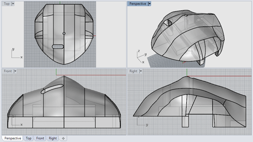
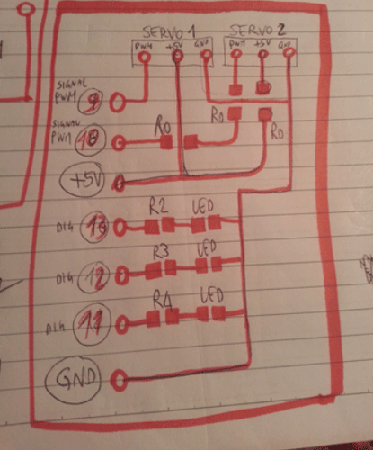

"Piske", a robotic fish
.
Section 1: The "idea"
I've always been attracted by underwater life. This is the main reason because I've decided to design "Piske". "Piske" means fish in Sardinian dialect. For its characteristic shape, a monkfish (http://en.wikipedia.org/wiki/Lophius) has been chosen as a starting shape for design. When the “Piske” project will be complete, groups of low-cost “sensing” fishes will be free to move in oceans, lakes and ponds, directly recording a huge amount of climatic data.
Piske will be a mix of all the disciplines/assignments included in the Academy.
Every discipline/assignment is strictly related to the functionality of different parts of the fish, as detailed in the following figure. I.e. the input device represent the connection with the external world, the brain represent the processor (Fab Kit), the directional engines are servo motors (output devices) and so on.
Section 2: 3D model and mechanical aspect
The shell of Piske is composed of 5 differents parts.Four are represented in the above picture.
The fifth part (pectoral fins, propeller, servos and DC motor) have been detailed in the following.
The TOP part: it’s the container of the input device (light sensor), the first output device (LED emergency system), the second output device (Servos).
The CENTRAL part: it’s the container of the power supply (9V battery for DC motor and 4.5V battery for the processor/devices) and the Fab Kit
The BOTTOM part: it’s the container of the DC motor, shaft and propeller.
The shell design has been a big problem, especially because of the small dimension of the body.
An overview of the parts is described by means of the following picture.
TOP PART 
CENTRAL PART
BOTTOM PART
Now, using a “clipping plane”, that provides a dynamic section of the object, all the internal structure is showed. Note the complexity of the internal structure!
The video showing the “clipping plane” is following.The internal spaces analysis is detailed in the following animation. Please note that this kind of analisys is a more efficient 3D transposition of the classical 2D analisys: you can check all the 2D sections in real time.
Dynamic section in Rhinoceros (clipping plane) from antonio burrai on Vimeo.
Several printing test have been made in order to find the final shape.
All the printing test have been performed using a Zortrax M200 (
https://zortrax.com/), using white ABS.
Lots of them have been destroyed or damaged too much by successive drilling or cutting in order to fit all the components.
Please note that the first test (central picture) is very “full” of material, whilst at the end, the prototype is almost completely perforated.
See, with reference to the debugging stages, the following picture of the bottom part.
Last but not least, the propulsion system.
And the pectoral fins.
Section 3: Control board
The control board is a Fab Kit, with its ATMEGA328 processor.
Which parts of the FabKit I need for my project? I need:
Two pins for the power supply (from a 4.5V battery using the VCC, GND from the FTDI connection)
Two pins for the power supply of the: servos, light sensor and LEDs (VCC, GND)
Two pins for the servo control, namely the 9 and 10. Three pins for the LEDs control, namely the 11, 12 and 13. One pin for the light sensor control, namely the A0.One of the most USEFUL commands of Eagle is the following:

Just use the EYE to enlighten the trace you need. Using the processor pinout you can easily discover at which header connect your cable.
In order not to check traces every five minutes, I’ve prepared a sketch useful for fast controls.
One of the most annoying part has been the change of cables every time I needed to send a different code to the board: connect to Arduino IDE, upload sketch, connect to devices and power and so on...
One of the future improvements will be the positioning of a double FTDI connection.
I’ve soldered the header vertically. As it will be explained in the following sections, this will be a great mistake, in terms of occupied space. Just as a preview, the ultra-small available space is showed in the following picture.
This is not the final version, just an in progress version prior to the clash detection.
Section 4: Input device
As described at the beginning, the design depth of swimming is related to the quantity of light that a light sensor placed in the top of the head of the monkfish can receive.
On the basis of the “kind of water” in which “Piske” is swimming, several light penetration curves can be defined and implemented.
Please note that the light sensor can provide an input value ranging between 0 and 1023. For our purposes 1023 is the water surface (100% of sun light, no water interference) and 0% is the deep water darkness (0% of sun light, full water interference).
In this specific case, the following curves have been defined.
The design swimming depth is defined if 600<=H<=800 (green zone)
The alert zones are defined if 800
Section 5: Output device
On the basis of the light data, a visual reply is returned from the system: red, green or yellow light blink depending of the zone in which “Piske” is swimming.
The board containing the connections between output devices has been entirely designed starting from the following sketch (see also "Output device" page for further details).
Please note the presence of 0 (zero) ohm resistors.

Note also that servos are positioned symmetrically, so even the rotation data must be set symmetrical (with respect to the 0°-180° range).
Those are the rotation scheme:
One particular aspect is that used servos are very cheap, so they are not so precise. I.e. please note that the degree of rotation of the green (safe) position is not the same: this is related to the not identical behavior of the servos.
Design data (as reported in the following code) are:
Section 6: Code description
The final code has been attached (download link is following).
Section 7: License
For further details about License please refer to the following link : http://fabacademy.org/archives/2015/eu/students/burrai.antonio/week17.html
Section 8: Download area
The following files are downloadable:
| Type of file |
Description |
Link (Type of file) |
| Fabrication files: vectors(s) / 3D model(s) |
Complete 3D model (Rhinoceros) |
(3DM) |
| Input device - Eagle file |
Board file |
(BRD) |
Input device - Eagle file |
Schematic file |
(SCH) |
Input device (edge cut) |
Image file |
(PNG) |
Input device (drill) |
Image file |
(PNG) |
Input device (traces) |
Image file |
(PNG) |
Output device - Eagle file |
Board file |
(BRD) |
Output device - Eagle file |
Schematic file |
(SCH) |
Output device (edge cut) |
Image file |
(PNG) |
Output device (drill) |
Image file |
(PNG) |
Output device (traces) |
Image file |
(PNG) |
(Working) Arduino Code |
"Piske" complete sketch |
(ZIPPED INO) |
Section 9: Final Video
An overview of the complete project is following.
Piske - Final Project from antonio burrai on Vimeo.